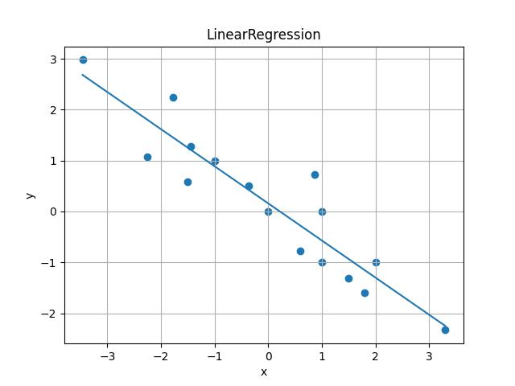

This Linear Regression model shows correlation between
Food Waste and Usage of Mobile Tablets.
The graph and scatter plot shows the dataset and following regression direction.
To know more about this data and how it works,
please click "About" button on upper side of the screen.
Plus, to refresh if any bug happened on the page, click logo to refresh.
On this section, the input data will be your tablet usage.
and the following value will be expected amount of waste.
Regression Status

This software shows linear/polynomial
regression of 2 datasets.
correlation of usage of
mobile tablet and food waste.
To know more about this data
and how it works,
please click "About" button
on upper side of the screen.